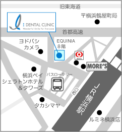
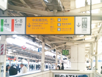
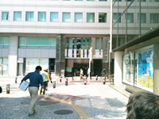
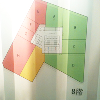

インプラントならアイデンタルクリニック トップページ > 概要・アクセス > 横浜医院の紹介
横浜駅西口から徒歩1分と ご来院にはとても便利です
|

|


横浜医院：医院長 加納 貴充
|

ＪＲでお越しの方
|  | ＪＲ横浜駅中央南改札を通り、西口に出て下さい。 |
|---|---|
 | |
バスロータリーに面して右に進むと正面に「MORE’S」(モアーズ)さんが見えます。 |
|
| |
 |
そのまま道なり左に進み、右手に「東京三菱UFJ信託銀行」「横浜銀行」さんを通り… |
|  | 正面少し右に「EQUINIA」というビルの入口が見えてきます。 |
| |
「EQUINIA」と小さく英語で表記されており、少し分かりづらいのでご注意下さい。 |
|
| |
|  | エレベーターで８Ｆにあがり、左に進み、突きあたりの「菅野事務所」さんを右に曲がり一番奥が８階のＥ「アイデンタルクリニック横浜医院」です。 |